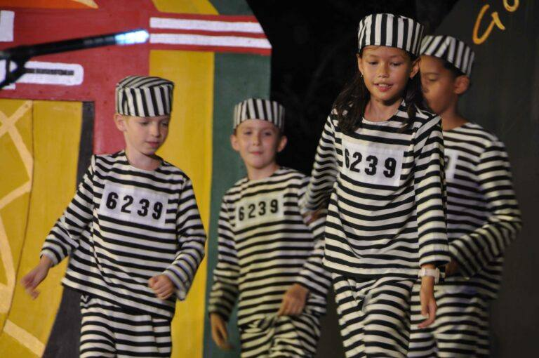
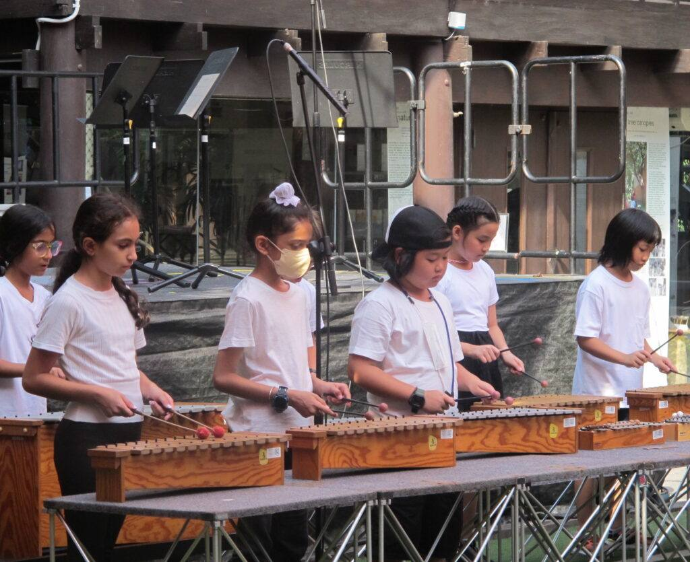

Music, drama and dance performance, together.
Armonia is ELC's enrichment programme for children in Years 4 to 6, bringing music, drama and dance performance together. Sessions run on Tuesday and Thursday afternoons from 3 to 4pm. Children work in small groups and return to their work week after week, so ideas have time to grow. Performances through the school year give children a real audience for what they rehearse and make.
Performances anchor the Armonia year, and they belong to a school that loves putting children on stage. At ELC's drama nights nobody auditions for a place: every child takes a part, whether the evening is a full production like A Night in Sherwood or light and shadow work in the Theatre of the Imagination. Read the story on our blog.

The same is true when the school sings. Whole year groups fill the stage for ELC's musicals, and concert season is how children share what they have been learning with their families and the wider community. Read the story on our blog.

Four areas are proposed for where Armonia grows next. They are not confirmed yet, and they may change as the programme settles.
Expressive languages
Drawing, painting and building, treated as languages for thinking. Children work with real materials until a piece says what they mean.
DisciplineScience
Hands-on investigation. Children ask real questions, test them with real materials, and follow the evidence.
DisciplineTechnology
Making, code and robotics as tools for ideas. Children build things that work, and learn to think by building.
DisciplineSport
Movement, teams and craft. Children work at one skill until it improves, then use it in play.
The programme is being settled now: details land here as they are confirmed.